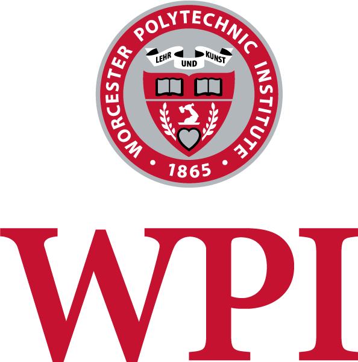

Yale University
Ph.D. in Pharmacology
Focus: aging, lipidomics & herbal systems pharmacology
Academic Journey
Ph.D. in Pharmacology
Focus: aging, lipidomics & herbal systems pharmacology
B.S. in Biotechnology & B.S. in Biochemistry (double major)
Focus: Artemisia natural products, tuberculosis & dermal fibrosis
